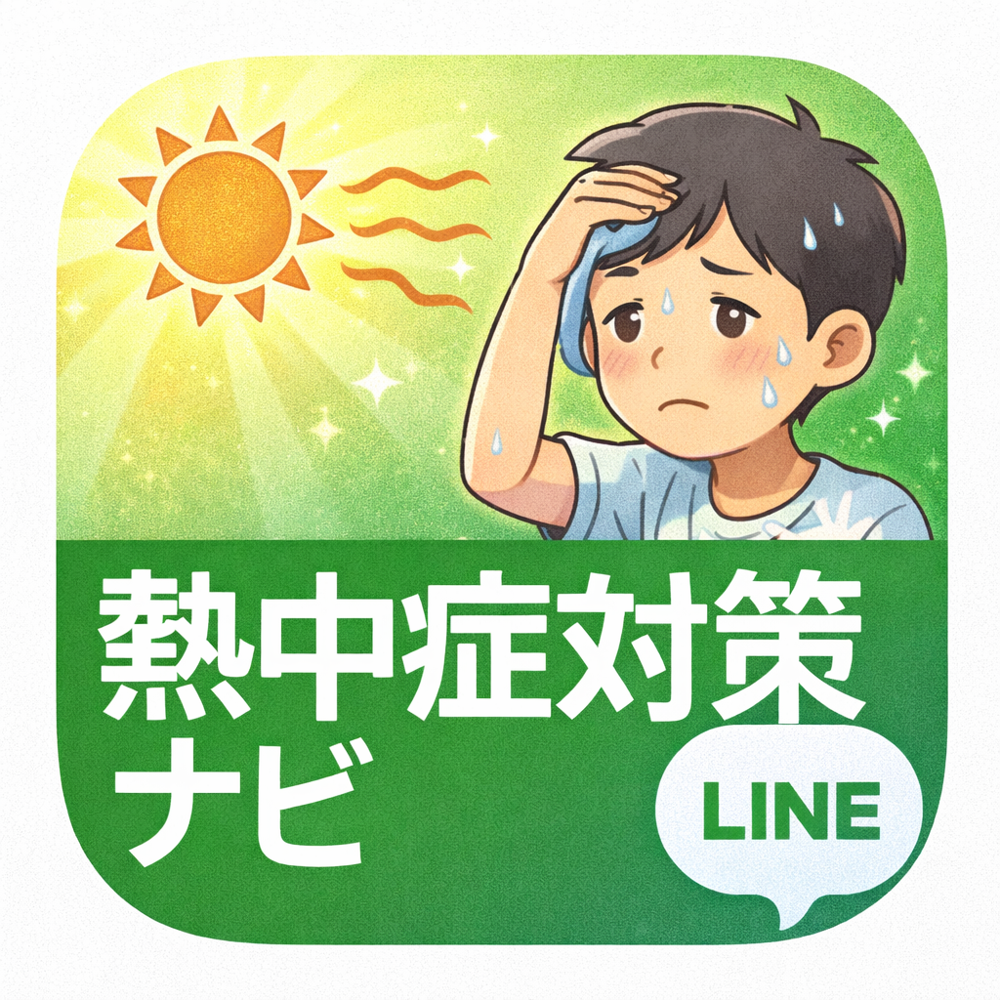

Team名:Heat Safety Navigator in Nago
暑い日に、迷わず判断できる学生向け熱中症対策を教えてくれる公式LINEサービスです。
キーワードを入れて Enter または 🔍 を押すと、該当する機能の説明へ移動します。
「熱中症対策ナビ ― 判断を『行動』に変える高校生向け支援システム ― として応募しています。」は、 第3回 全国情報教育コンテスト（デジタル学園祭）に全国情報教育コンテストにHeat Safety Navigator in Nagoというチーム名で応募している作品です。
日常の学校生活で直面する「暑さの中での判断の難しさ」に対して、 データ（天気・WBGT・体調入力など）と生成AIを組み合わせ、 高校生が自分で行動を選びやすくなるよう支援することを目指しています。
熱中症対策ナビは、暑い日に「今どれくらい危険か」「どう行動すべきか」を 迷わず判断できるようにするための、学生向けの情報支援公式LINEです。 気温や暑さの情報を見ても判断が難しい場面を想定し、 行動につながる形で情報を整理して届けます。
近年の猛暑で熱中症は誰にでも起こりうる身近な危険となっており、 生徒自身が正しく判断し行動できる仕組みを作ることが重要です。
これらの機能は、熱中症の危険度や行動の目安を分かりやすく提示し、
我慢や自己判断による行動ミスを減らすことをねらいとしています。
高校生だけでなく、中学生や教職員、保護者、地域のイベントでも活用できる形を目指しています。
本作品は、Google App script、公式LINE、Monaca Educationを組み合わせて構築したLINE BOTの機能です。
ユーザーの入力内容と環境データを組み合わせて危険度を判定し、 生成AIで「今取るべき行動」「避けるべき行動と代わりの行動」をわかりやすい文章として返す仕組みになっています。
学校現場や家庭で安心して利用できるよう、「分かりやすさ」と「安全性」の両立を意識して設計しました。
熱中症対策ナビを、もっと見やすく・分かりやすくするためにアンケートを実施しています。
回答は改善にのみ使用し、個人が特定される内容は求めません。
※外部サイト（Microsoft Forms）が開きます。